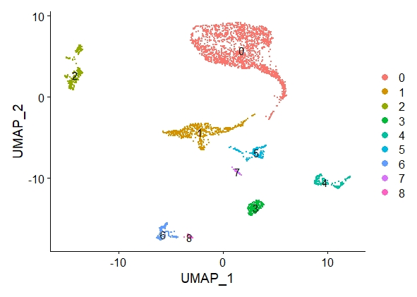

Cell type annotation
Cell type annotation metadata was also added using functionality from the Seurat package, based on solely the RNA modality.
Starting from the preprocessed scRNA data, we performed PCA, t-SNE and UMAP to get a representative lower dimensional dataset.
UMAP worked best in our data and we thus used the UMAP-learnt dimensions to perform clustering.
The resolution parameter for the clustering was set to 0.0015 in human and 0.025 in mouse, finding 9 and 7 distinct clusters, respectively.
Statistically significant biomarkers for each cluster were then found using the Seurat FindAllMarkers function.
This information, together with the original tissue from which the cells come from, is the input of scCATCH, a R package developed by Shao et al. (2020),
that uses available metadata of a scRNA-seq dataset to infer the cell types.

This figure shows the result of our UMAP clustering on the RNA data from the human dataset. Based on these clusters, marker genes were then calculated
and linked to cell types.